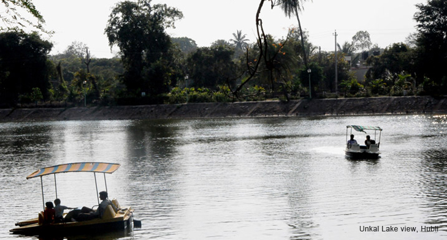

For a commercial and business hub, Hubli's name translates into sheer poetry. Hubli comes from 'Hubbali' which means flowering creeper, and from literature to industry, much has blossomed forth from this city. Hubli shares much of its spotlight with Dharward, its twin city. An upcoming industrial centre, Hubli enjoys the benefits of having been strategically located. Positioned exactly in between the Deccan Plateau and the forested hills of the Malenadu region, Hubli's ideal locale is further whetted by Dharwad's clout as a seat of learning. As much as it's poised to take on a more significant role in the commercial world, Hubli's proximity to some of Karnataka's most scenic and wild neighbourhoods, makes it what you would 'call idyllic. The Sakrebyle Elephant Camp is one such stop. A remnant of the Chalukyan times itself, Hubli stands just a few hours away from Karnataka's timeless niches - Hampi, Pattadakal, Bijapur, Aihole, Bidar and Badami. Don't forget to taste the famous Dharward peda or pick up some fabric embellished intricately by Hubli's signature Kasuti style of embroidery. courses in arts, commerce and science. The student population is made up of people from different cities and states in India.
Utsav Rock Garden Utsav Rock Garden is a contemporary sculpture garden consisting of indoor and outdoor sculpture museum where you can find the sculpture depicting the old rural life and folk culture of Karnataka. A unique picnic spot which delights common people, educated and intellectuals. This is a place where/ layman and VIPs’ can enjoy the art in the same path. At every corner of the garden you can find the beautiful combination of art and nature. It is not just a sculptural garden but it is also a cultural and educational center for public.